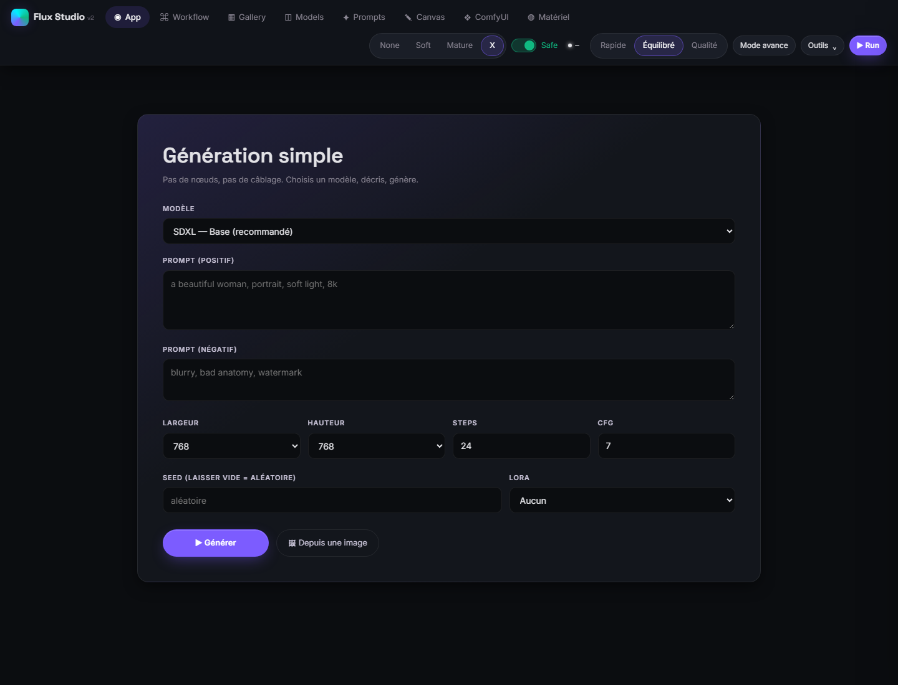
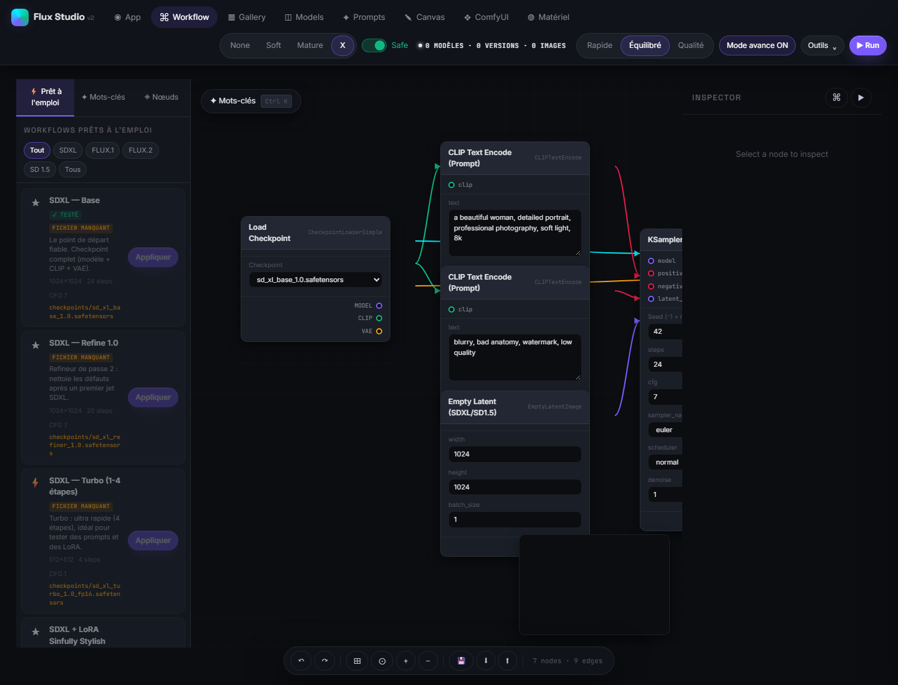

Génération simple
Choisissez un modèle, écrivez vos prompts, réglez dimensions, steps, CFG, seed et LoRA, puis envoyez le workflow à ComfyUI.
Flux Studio relie un générateur simple, un éditeur de workflows visuel et votre installation ComfyUI. Les modèles et les calculs restent sur votre machine. C’est aussi un terrain d’expérimentation pour l’IA appliquée au soutien informatique et les intégrations fiables entre outils.

Une interface locale pour explorer, construire et lancer des workflows ComfyUI, avec des outils adaptés aux modèles réellement installés.
Choisissez un modèle, écrivez vos prompts, réglez dimensions, steps, CFG, seed et LoRA, puis envoyez le workflow à ComfyUI.
Assemblez les nœuds, reliez les sorties, partez de modèles prêts à l’emploi et vérifiez les workflows avant de les exécuter.
Parcourez la galerie, recherchez des modèles, suivez les téléchargements et accédez rapidement à l’index local de LoRA.

.env.example en .env, puis adaptez COMFYUI_ROOT et les options locales.GitHub Pages publie ce guide statique; il ne fait pas tourner Python, ComfyUI, SQLite ou les modèles. Le backend doit tourner sur un serveur privé équipé/configuré pour ComfyUI. Flux Studio est conçu pour un usage local, sans authentification intégrée : ne publiez pas son API directement sur Internet.